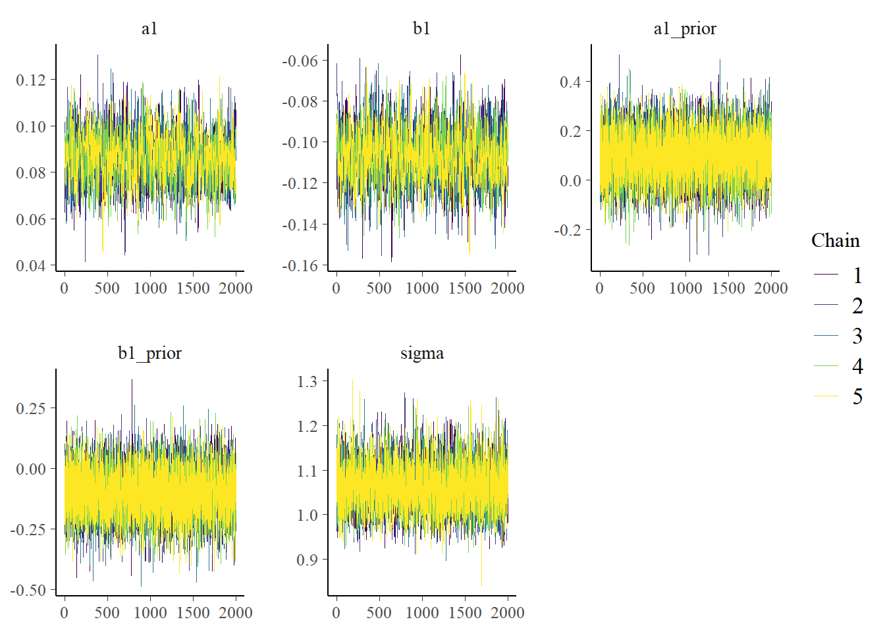
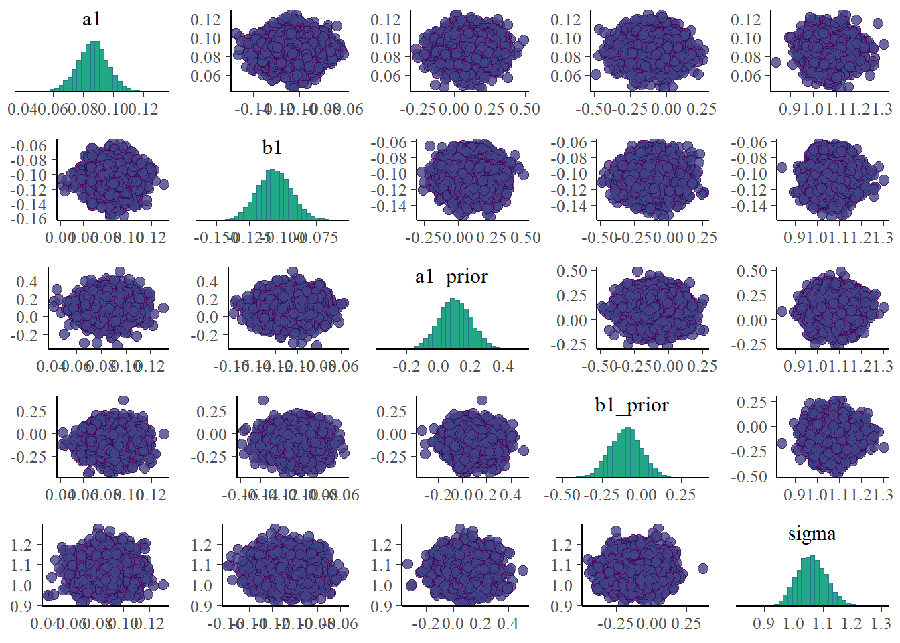
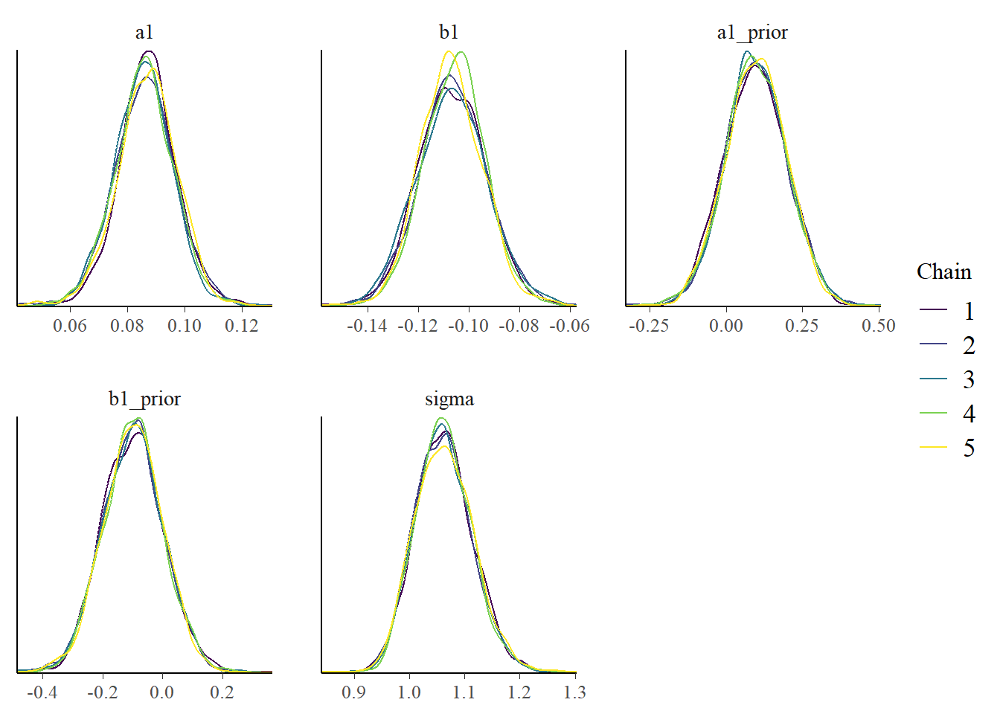
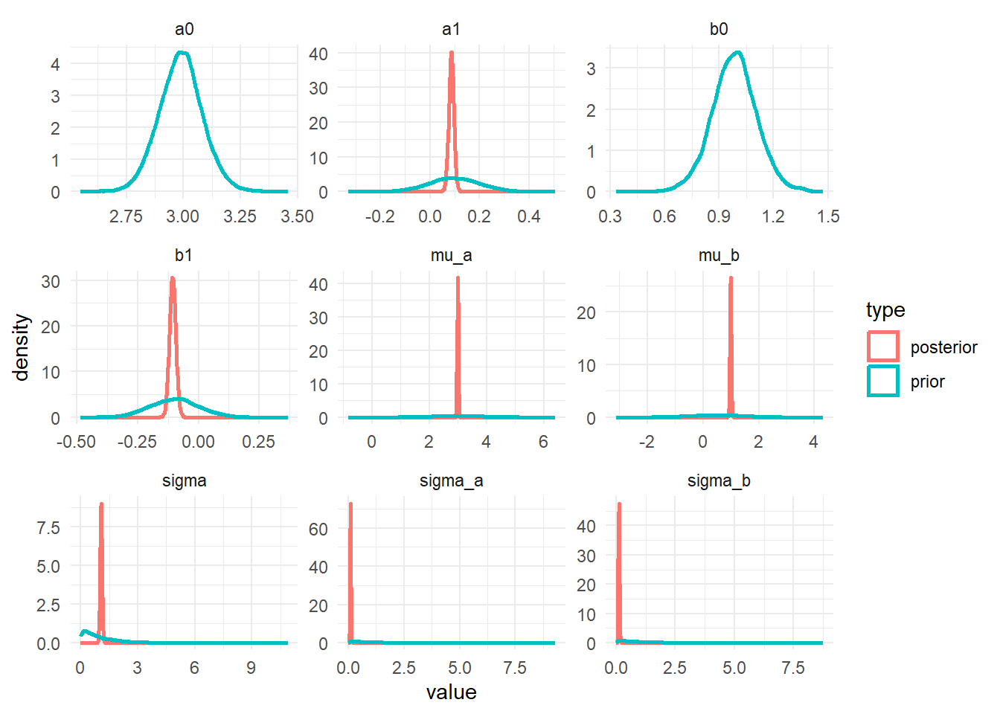
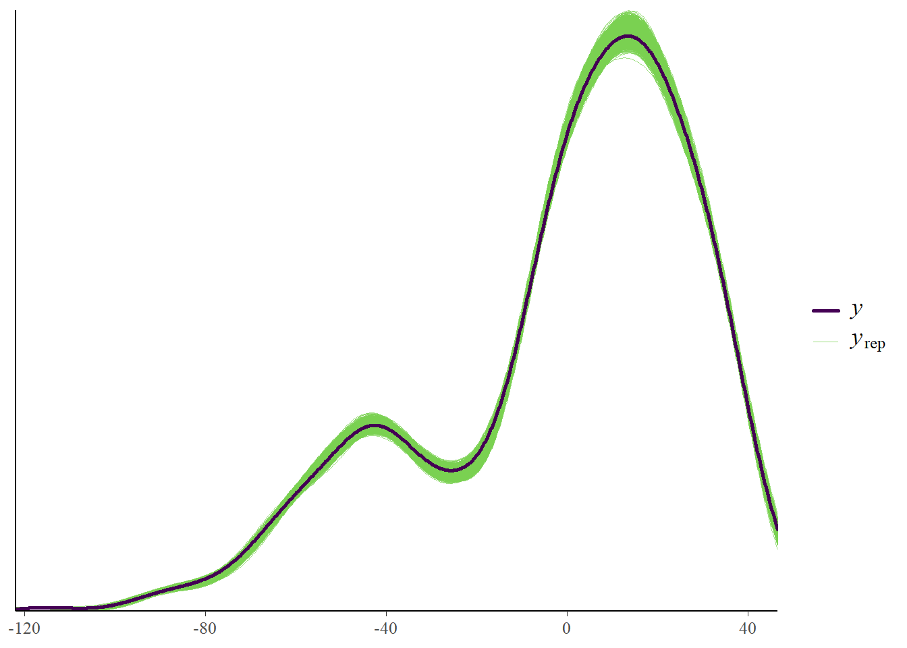
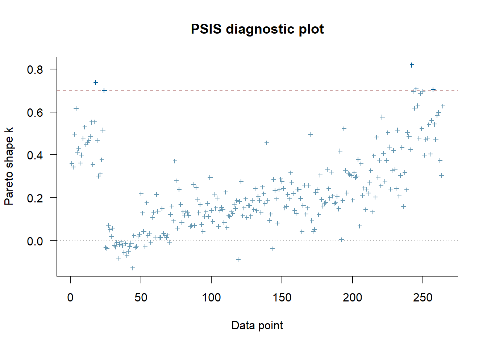
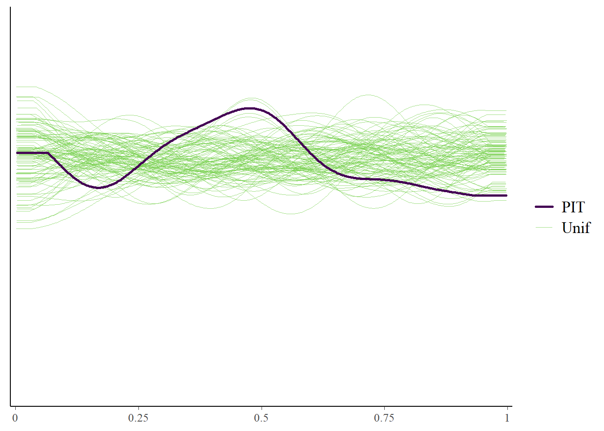
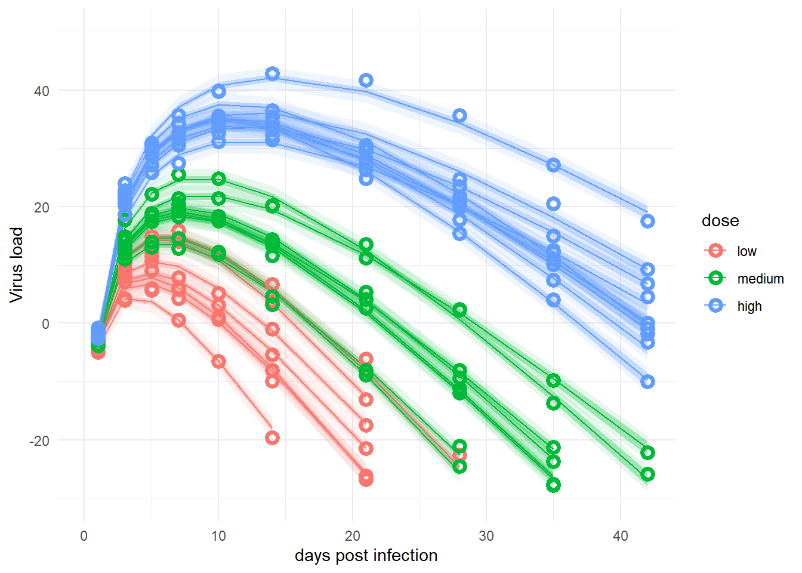

library("here") # for file loading
library("dplyr") # for data manipulation
library("ggplot2") # for plotting
library("fs") # for file path
library("cmdstanr") # for model fitting
library("bayesplot") # for plotting results
library("posterior") # for post-processing
library("loo") # for model diagnosticsBayesian analysis of longitudinal multilevel data - part 5
R
Data Analysis
Bayesian
Stan
Part 5 of a tutorial showing how to fit directly with Stan and cmdstanr.
Overview
This is a re-implementation of a prior model using cmdstanr and Stan code. It is a continuation of a prior series of posts. You should start at the beginning.
Here is the Stan code for this example and this is the R script that runs everything.
Introduction
A while ago, I wrote a series of tutorials that discuss fitting longitudinal data using Bayesian multilevel/hierarchical/mixed-effects models.
For a research project, I now want to implement a model that uses a set of ordinary differential equations (ODEs). I figured to understand what I’m trying to do, I should first teach myself and write it up in a tutorial.
To implement ODEs with Stan, one can’t fully use the rethinking or brms package, one needs to write at least some Stan code. Based on my needs, it is best if I fully implement the model in Stan and call it from R through cmdstanr.
I was going to do all at once, but then realized it’s better if I first re-implement the old (non ODE-based) setup with Stan code, and then once that’s up and running, switch to the ODE model.
So this post is an intermediary step to my final goal. It might be of interest to folks to see how to implement this question fully with Stan, even if they don’t plan on using ODEs.
Quick recap
I assume you read through the previous posts, at least part 1 which describes the overall setup and the models to be explored, and part 2 which explains the models further and fits the data using rethinking. If you didn’t, the following won’t make much sense 😁.
Previously, I explored several model variants. Here, I’m focusing on the adaptive pooling model (which I previously labeled model 4). As a repeat, here are the model equations. I changed the distributions for a few of the parameters since it turned out the ones I used previously made it tricky to sample the priors with Stan and led to convergence issues.
\[ \begin{aligned} \textrm{Outcome} \\ Y_{i,t} \sim \mathrm{Normal}\left(\mu_{i,t}, \sigma\right) \\ \\ \textrm{main model describing the virus trajectory} \\ \mu_{i,t} = \exp(\alpha_{i}) \log (t_{i}) -\exp(\beta_{i}) t_{i} \\ \\ \textrm{Deterministic models for main parameters} \\ \alpha_{i} = a_{0,i} + a_1 \left(\log (D_i) - \log (D_m)\right) \\ \beta_{i} = b_{0,i} + b_1 \left(\log (D_i) - \log (D_m)\right) \\ \\ \textrm{population-level priors} \\ \sigma \sim \mathrm{Exponential}(1) \\ a_1 \sim \mathrm{Normal}(0.1, 0.1) \\ b_1 \sim \mathrm{Normal}(-0.1, 0.1) \\ \\ \textrm{individal-level priors} \\ a_{0,i} \sim \mathrm{Normal}(\mu_a, \sigma_a) \\ b_{0,i} \sim \mathrm{Normal}(\mu_b, \sigma_b) \\ \\ \textrm{hyper priors} \\ \mu_a \sim \mathrm{Normal}(3, 1) \\ \mu_b \sim \mathrm{Normal}(0.5, 1) \\ \sigma_a \sim \mathrm{Exponential}(1) \\ \sigma_b \sim \mathrm{Exponential}(1) \end{aligned} \]
Model implementation
I previously used the brms and rethinking R packages to run our Stan models in R, without having to write Stan code. Of course, we could implement the model above in either of those packages. But in preparation of what I really want to do (using ODE models, and eventually fully account for censored data), I need to switch to coding the model in Stan. There might be hacks to do it with brms or rethinking, but it seems more flexible and also more transparent to just code the full model in Stan. We’ll still run it through R using cmdstanr. Links to the Stan and R code files are given at the top of this document.
We start by loading packages and defining a few settings.
############################################
# some general definitons and setup stuff
############################################
#setting random number seed for reproducibility
rngseed = 1234
# I'll be saving results so we can use them without always running the model
# Note that the files are often too large for standard Git/GitHub - where this project lives
# Git Large File Storage should be able to handle it
# I'm using a simple hack so I don't have to set up Git LFS
# I am saving these large file to a folder that is synced with Dropbox
# adjust accordingly for your setup
filepath = fs::path("C:","Data","Dropbox","datafiles","longitudinalbayes")
#filepath = fs::path("D:","Dropbox","datafiles","longitudinalbayes")
filename = "cmdstanr2par.Rds"
stanfile <- here('posts','2024-02-15-longitudinal-multilevel-bayes-5',"stancode-2par.stan")We’ll use the same data as before. We just need to reshape it a bit to get it into the format that cmdstanr requires.
# adjust as necessary
simdatloc <- here::here("posts", "2022-02-22-longitudinal-multilevel-bayes-1", "simdat.Rds")
simdat <- readRDS(simdatloc)
# again using dataset 3 for fitting
# some formatting to get it into the shape needed for cmdstanr
Nind <- length(unique(simdat$m3$id)) # number of individuals
Nobs <- length(simdat$m3$id) # total number of observations
fitdat <- list(
id = simdat[[3]]$id,
outcome = simdat[[3]]$outcome,
time = simdat[[3]]$time,
dose_adj = simdat[[3]]$dose_adj,
Nobs = Nobs,
Nind = Nind
)Stan code
We need to write the Stan model code. While one could embed Stan code inside an R script, I find it best to write that code in a separate file and then load it. Here, the code is in file called stancode-2par.stan. This is how it looks like.
//
// Stan code for fitting a hierarchical model to time-series data
//
data{
int<lower = 1> Nobs; //number of observations
int<lower = 1> Nind; //number of individuals
vector[Nobs] outcome; //virus load
vector[Nobs] time; // times at which virus load is measured
vector[Nobs] dose_adj; //dose after adjustment, only differs by individual but is repeated
array[Nobs] int id; //vector of person IDs to keep track which data points belong to whom
}
parameters{
// population variance
real<lower=0> sigma;
// population-level dose dependence parameters
real a1;
real b1;
// individual level variation parameters
vector[Nind] a0;
vector[Nind] b0;
// hyper-parameters to implement adaptive pooling
real mu_a;
real mu_b;
real<lower=0> sigma_a;
real<lower=0> sigma_b;
} // close parameters block
// Generated/intermediate parameters
transformed parameters{
// predicted virus load from model
vector[Nobs] virus_pred;
// main model parameters
// each individual has their potentially own value
vector[Nind] alpha;
vector[Nind] beta;
// compute main model parameters
// note that dos_adj contains a dose for each observation,
// but it's repeated after the first Nind entries, so we don't need to loop over all obersvations
for ( i in 1:Nind ) {
alpha[i] = a0[i] + a1 * dose_adj[i];
beta[i] = b0[i] + b1 * dose_adj[i];
}
// loop over all observations
// since paramaters are saved in vectors of length corresponding to number of individuals
// we need to index with that extra id[i] notation
for (i in 1:Nobs)
{
virus_pred[i] = exp(alpha[id[i]]) * log(time[i]) - exp(beta[id[i]]) * time[i] ;
}
} // close transformed parameters block
model{
// hyper-priors to allow for adaptive pooling among individuals
mu_a ~ normal( 3 , 1 );
mu_b ~ normal( 0.5 , 1 );
sigma_a ~ exponential( 1 );
sigma_b ~ exponential( 1 );
// individual variation of each model parameter
a0 ~ normal( mu_a , sigma_a );
b0 ~ normal( mu_b , sigma_b );
// average dose-dependence of each model parameter
a1 ~ normal( 0.1 , 0.1);
b1 ~ normal( -0.1 , 0.1);
// residual population variation
sigma ~ exponential( 1 );
outcome ~ normal( virus_pred, sigma );
} // close model block
// this code block is not needed for the model fitting
// but it's useful to compute quantities that one can use later
// for model diagnostics and exploration
generated quantities {
// define quantities that are computed in this block
vector[Nobs] ypred;
vector[Nobs] log_lik;
real<lower=0> sigma_prior;
real<lower=0> sigma_a_prior;
real<lower=0> sigma_b_prior;
real a1_prior;
real b1_prior;
real mu_a_prior;
real mu_b_prior;
real a0_prior; // same prior for each individual so only specify one
real b0_prior;
// this is so one can plot priors and compare with posterior later
// simulate the priors
sigma_prior = exponential_rng( 1 );
sigma_a_prior = exponential_rng( 1 );
sigma_b_prior = exponential_rng( 1 );
a1_prior = normal_rng( 0.1 , 0.1);
b1_prior = normal_rng( -0.1 , 0.1);
mu_a_prior = normal_rng( 3 , 1 );
mu_b_prior = normal_rng( 0.5 , 1 );
a0_prior = normal_rng(mu_a, sigma_a);
b0_prior = normal_rng(mu_b, sigma_b);
// compute log-likelihood and predictions
for(i in 1:Nobs)
{
log_lik[i] = normal_lpdf(outcome[i] | virus_pred[i], sigma);
ypred[i] = normal_rng(virus_pred[i], sigma);
}
} //end generated quantities block I added some comments to the Stan model, but if you have never written Stan code, this is likely not fully clear. I won’t try to explain Stan code in detail here. There are lots of good resources on the Stan website and other places online. Note that the generated quantities block is not technically part of the model, and we would get the same results without it. But it is included to compute priors, likelihood and posterior predictions, so we can explore those later. You’ll see that used below. While we could have all the information that’s inside the transformed parameters block part of the model block, that would mean that the generated quantities code bits can’t access that information. Therefore, all of these intermediate steps are done in transformed parameters and then used in both the model and the generated quantities block. I generally find it easiest to have any distributional/probabilistic bits of code (those that include the ~ sign) in the model block, and everything else as much as possible in transformed parameters.
This uses cmdstanr to load and compile the Stan model.
# make Stan model.
stanmod1 <- cmdstanr::cmdstan_model(stanfile,
pedantic=TRUE,
force_recompile=TRUE)Model fitting settings
To fully specify a model, we need to define the details of the model run (e.g., the random seed, the number of warm-up and sampling steps). This often requires some tuning to find the right values. It is generally a good idea to start with fewer iterations and less stringent fitting criteria while debugging the code. Once everything seems working, one can do one long final run.
# settings for fitting
# keeping values somewhat low to make things run reasonably fast
# for 'production' you would probably want to sample more
# and set more stringent conditions
fs_m1 <- list(
warmup = 1500,
sampling = 2000,
max_td = 18, # tree depth
adapt_delta = 0.9999,
chains = 5,
cores = 5,
seed = rngseed,
save_warmup = TRUE
)It is also a good idea to specify starting values for the parameters. Models can be run without providing starting values (also called initial conditions). In that case, cmdstanr will pick default values. However, setting starting values can often improve convergence and thus cut down on required computing time. It also requires one to think a bit more carefully about their model, which is a good thing 😁.
# separate definition of initial values, added to fs_m1 structure
# a different sample will be drawn for each chain
# there's probably a better way to do that than a for loop
set.seed(rngseed) #make inits reproducible
init_vals_1chain <- function() {
(list(
mu_a = runif(1, 1, 3),
mu_b = runif(1, 0, 1),
sigma_a = runif(1, 1, 10),
sigma_b = runif(1, 1, 10),
a1 = rnorm(1, -0.2, 0.2),
b1 = rnorm(1, -0.2, 0.2),
sigma = runif(1, 1, 10)
))
}
inits <- NULL
for (n in 1:fs_m1$chains)
{
inits[[n]] <- init_vals_1chain()
}
fs_m1$init <- initsModel fitting
At this point, we have specified everything necessary to run the model. This runs the model with the specified settings. I’m supressing the output but it’s useful to look at it when you run it to make sure the sampler is running ok.
This runs the model. It’s not actually run here to speed up generation of this Quarto file, but the code chunk is in the R script, so you can run it.
res_m1 <- stanmod1$sample(
data = fitdat,
chains = fs_m1$chains,
init = fs_m1$init,
seed = fs_m1$seed,
parallel_chains = fs_m1$chains,
iter_warmup = fs_m1$warmup,
iter_sampling = fs_m1$sampling,
save_warmup = fs_m1$save_warmup,
max_treedepth = fs_m1$max_td,
adapt_delta = fs_m1$adapt_delta,
output_dir = filepath
)Model result loading
To save time, we don’t run the model each time, instead we save the results and load them.
# loading previously saved fit.
# useful if we don't want to re-fit
# every time we want to explore the results.
# since the file is too large for GitHub
# it is stored in a local cloud-synced folder
# adjust accordingly for your setup
res_m1 <- readRDS(fs::path(filepath,filename))Model diagnostics
First, we look at diagnostics from the fitting routine to make sure nothing obviously wrong shows up.
print(res_m1$cmdstan_diagnose())File D:/Dropbox/datafiles/longitudinalbayes/stancode-2par-202402271800-1-08400a.csv not found
File D:/Dropbox/datafiles/longitudinalbayes/stancode-2par-202402271800-2-08400a.csv not found
File D:/Dropbox/datafiles/longitudinalbayes/stancode-2par-202402271800-3-08400a.csv not found
File D:/Dropbox/datafiles/longitudinalbayes/stancode-2par-202402271800-4-08400a.csv not found
File D:/Dropbox/datafiles/longitudinalbayes/stancode-2par-202402271800-5-08400a.csv not found
No valid input files, exiting.
$status
[1] 0
$stdout
[1] "File D:/Dropbox/datafiles/longitudinalbayes/stancode-2par-202402271800-1-08400a.csv not found\r\nFile D:/Dropbox/datafiles/longitudinalbayes/stancode-2par-202402271800-2-08400a.csv not found\r\nFile D:/Dropbox/datafiles/longitudinalbayes/stancode-2par-202402271800-3-08400a.csv not found\r\nFile D:/Dropbox/datafiles/longitudinalbayes/stancode-2par-202402271800-4-08400a.csv not found\r\nFile D:/Dropbox/datafiles/longitudinalbayes/stancode-2par-202402271800-5-08400a.csv not found\r\nNo valid input files, exiting.\r\n"
$stderr
[1] ""
$timeout
[1] FALSEThings look reasonably good, no obvious problems.
Another important check are to make a few diagnostic plots. We’ll first need to get the samples, both with and without warmups, to be able to make various figures.
# this uses the posterior package to get draws
samp_m1 <- res_m1$draws(inc_warmup = FALSE, format = "draws_df")
allsamp_m1 <- res_m1$draws(inc_warmup = TRUE, format = "draws_df")Now we can look at a few figures. Here I’m showing a trace plot and a pairs plot. I’m not discussing the plots in detail, you can look up the help file for each R command to learn more.
Note that I’m including some priors here. That’s not too meaningful since the prior distributions do not change as the fitting proceeds. Still, it won’t hurt to see them. If for some reason the trace plots for the priors look strange (e.g., indicating poor mixing), it means something in the code is wrong. Similarly, none of the priors should show correlations with each other in the pairs plot.
# only main parameters
# excluding parameters that we have for each individual, is too much
plotpars <- c("a1", "b1", "a1_prior", "b1_prior", "sigma")
bayesplot::color_scheme_set("viridis")
bp1 <- bayesplot::mcmc_trace(samp_m1, pars = plotpars)
bp2 <- bayesplot::mcmc_pairs(samp_m1, pars = plotpars)
plot(bp1)
plot(bp2)
# just to get a picture that can be shown together with the post
# ggsave("featured.png",bp2)The plots look reasonable. Well-mixing chains and no noticeable correlations among parameters.
Model results
Now that we think we can somewhat trust that the sampling worked, we’ll take a look at a summary table for the distributions of some of the model parameters. I cut it off since there are too many to show (each individual as multiple parameters with associated distributions). We’ll also look at the posteriors in a graph.
print(head(res_m1$summary(), 15))# A tibble: 15 × 10
variable mean median sd mad q5 q95 rhat ess_bulk
<chr> <dbl> <dbl> <dbl> <dbl> <dbl> <dbl> <dbl> <dbl>
1 lp__ -67.7 -67.4 5.71 5.64 -77.6 -58.9 1.00 3167.
2 sigma 1.06 1.06 0.0515 0.0515 0.982 1.15 1.00 10131.
3 a1 0.0863 0.0863 0.0103 0.00982 0.0689 0.103 1.00 1244.
4 b1 -0.107 -0.107 0.0131 0.0129 -0.128 -0.0850 1.00 1443.
5 a0[1] 3.18 3.18 0.0278 0.0273 3.13 3.22 1.00 1716.
6 a0[2] 3.14 3.14 0.0277 0.0271 3.09 3.18 1.00 1715.
7 a0[3] 2.94 2.94 0.0294 0.0287 2.89 2.99 1.00 2024.
8 a0[4] 2.88 2.88 0.0305 0.0300 2.83 2.93 1.00 2088.
9 a0[5] 2.92 2.92 0.0299 0.0290 2.87 2.97 1.00 2045.
10 a0[6] 3.01 3.01 0.0288 0.0282 2.96 3.06 1.00 1770.
11 a0[7] 2.96 2.96 0.0296 0.0293 2.91 3.01 1.00 2007.
12 a0[8] 2.98 2.98 0.0148 0.0147 2.96 3.01 1.00 7164.
13 a0[9] 2.91 2.91 0.0162 0.0158 2.88 2.94 1.00 7971.
14 a0[10] 2.98 2.98 0.0151 0.0149 2.96 3.01 1.00 7333.
15 a0[11] 2.94 2.94 0.0153 0.0153 2.91 2.96 1.00 7326.
# ℹ 1 more variable: ess_tail <dbl>bp3 <- bayesplot::mcmc_dens_overlay(samp_m1, pars = plotpars)
plot(bp3)
The estimates for the parameters are fairly close to those used to simulate the data and obtained previously. That’s reassuring, since we just re-fit the same model1 using a different R package, we really want to get the same results.
Priors and Posteriors
Next, we’ll compare prior and posterior distributions. This can give an indication if the priors were selected well or are too broad or overly influential. To be able to show priors, we needed all that extra information in the generated quantities block in the Stan code. The individual-level posteriors for \(a_0[i]\) and \(b_0[i]\) are omitted since there are too many. With a bit more data wrangling, one could plot the averages for these parameters, but I couldn’t quickly think of how to do it, so I’m skipping it 😁. The priors for these parameters are shown since they same for each individual.
# data manipulation to get in shape for plotting
postdf <- samp_m1 %>%
select(!ends_with("prior")) %>%
select(!starts_with(".")) %>%
select(-"lp__") %>%
select(!contains("["))
priordf <- samp_m1 %>%
select(ends_with("prior")) %>%
rename_with(~ gsub("_prior", "", .x, fixed = TRUE))
postlong <- tidyr::pivot_longer(data = postdf, cols = everything(), names_to = "parname", values_to = "value") %>% mutate(type = "posterior")
priorlong <- tidyr::pivot_longer(data = priordf, cols = everything(), names_to = "parname", values_to = "value") %>% mutate(type = "prior")
ppdf <- dplyr::bind_rows(postlong, priorlong)m1_p1 <- ppdf %>%
ggplot() +
geom_density(aes(x = value, color = type), linewidth = 1) +
facet_wrap("parname", scales = "free") +
theme_minimal()
plot(m1_p1)
The plots show that the priors don’t overly influence the results, the data dominates the posteriors (they move and get more peaked, an indication that the data controls the posterior shape).
Observed versus predicted
Another useful plot is to look at observed versus predicted results. This is shown in the following plot. The data (black line, \(y\) variable) and the model (thin green line, \(y_{rep}\)) are following each other fairly closely. That’s a good sign. Systematic deviations would indicate that the model didn’t fully capture the patterns found in the data and might need modification.
ypred_df <- samp_m1 %>% select(starts_with("ypred"))
m1_p2 <- bayesplot::ppc_dens_overlay(fitdat$outcome, as.matrix(ypred_df))
plot(m1_p2)
Cross-validation tests
We can explore further doing cross-validation with the loo package. For this to work, the Stan code needs to include computation of the log-likelihood (stored in a variable called log_lik). We included that in the Stan code for this model.
Here are the diagnostics we get from loo. I won’t go into the details of cross-validation and LOO here, see the loo package website for good explanations.
# uses loo package
loo_m1 <- res_m1$loo(cores = fs_m1$chains, save_psis = TRUE)
print(loo_m1)
Computed from 10000 by 264 log-likelihood matrix.
Estimate SE
elpd_loo -419.5 12.1
p_loo 46.4 4.9
looic 839.0 24.1
------
MCSE of elpd_loo is NA.
MCSE and ESS estimates assume MCMC draws (r_eff in [0.4, 1.8]).
Pareto k diagnostic values:
Count Pct. Min. ESS
(-Inf, 0.7] (good) 259 98.1% 319
(0.7, 1] (bad) 5 1.9% <NA>
(1, Inf) (very bad) 0 0.0% <NA>
See help('pareto-k-diagnostic') for details.plot(loo_m1)
Some values aren’t too great. But it’s only a few and it’s very likely that if we were to run the model with more iterations and more stringent settings, we’ll get even better results. You can give it a try 😁.
Here’s some more LOO diagnostics.
ypred_df <- samp_m1 %>% select(starts_with("ypred"))
m1_p3 <- bayesplot::ppc_loo_pit_overlay(
y = fitdat$outcome,
yrep = as.matrix(ypred_df),
lw = weights(loo_m1$psis_object)
)
plot(m1_p3)
The marginal posterior predictive plot suggests some improvement might be possible (so that the solid line is more on top of the green lines). See here for more.
Model predictions
Finally, we want to look at the actual data and the model predictions. These lines of code compute the predictions for both the deterministic part of the model only (the mean) and for individual predictions that account for additional variability around the mean.
# averages and CI for
# estimates of deterministic model trajectory
# for each observation
# this is computed in the transformed parameters block of the Stan code
mu <- samp_m1 |>
select(starts_with("virus_pred")) |>
apply(2, quantile, c(0.05, 0.5, 0.95)) |>
t()
rownames(mu) <- NULL
# estimate and CI for prediction intervals
# the predictions factor in additional uncertainty around the mean (mu)
# as indicated by sigma
# this is computed in the predicted-quantities block of the Stan code
# the average of mu and preds should be more or less the same
# but preds will have wider uncertainty due to the residual variation sigma
preds <- samp_m1 |>
select(starts_with("ypred")) |>
apply(2, quantile, c(0.05, 0.5, 0.95)) |>
t()
rownames(preds) <- NULLThis plots the data and the predictions, similarly to previous posts of this series. As before, it shows the deterministic mean and credible interval (I chose 95% here) and the prediction intervals (the very light shaded areas, also chosen here at 95%). Agreement of model with data is good, as before.
Note that previously, I used new data to predict at more time points to get smoother curves. That was easy to do with rethinking and cmdstanr. I couldn’t figure out an easy way to do it here. It is possible to re-run a version of the Stan model that only includes the generated quantities block and give it new “data” with more time points and thereby return predictions. It should also be possible to do this with R code by recomputing trajectories for more data given the parameter distributions. I couldn’t right away think of a good way of doing it, so left it as is. One can still reasonably well compare models and data.
# change dose so it looks nicer in plot
dose <- as.factor(fitdat$dose_adj)
levels(dose)[1] <- "low"
levels(dose)[2] <- "medium"
levels(dose)[3] <- "high"
# place everything into a data frame
fitpred <- data.frame(
id = as.factor(fitdat$id),
dose = dose,
time = fitdat$time,
Outcome = fitdat$outcome,
Estimate = mu[, 2],
Qmulo = mu[, 1], Qmuhi = mu[, 3],
Qsimlo = preds[, 1], Qsimhi = preds[, 3]
)
# make the plot
predplot <- ggplot(data = fitpred, aes(x = time, y = Estimate, group = id, color = dose)) +
geom_line() +
geom_ribbon(aes(x = time, ymin = Qmulo, ymax = Qmuhi, fill = dose, color = NULL), alpha = 0.3, show.legend = F) +
geom_ribbon(aes(x = time, ymin = Qsimlo, ymax = Qsimhi, fill = dose, color = NULL), alpha = 0.1, show.legend = F) +
geom_point(aes(x = time, y = Outcome, group = id, color = dose), shape = 1, size = 2, stroke = 2) +
scale_y_continuous(limits = c(-30, 50)) +
labs(
y = "Virus load",
x = "days post infection"
) +
theme_minimal()
plot(predplot)
Summary and continuation
This completes the cmdstanr/Stan re-implementation and exploration of one of the previously explored models. Comparing the results to those found previously, we find good agreement. That’s somewhat comforting.
While I had planned to now implement the ODE model as a next step, I ended up deciding on one more intermediate step. Namely, I know that the ODE model I want to use has 4 main parameters, as opposed to the 2 parameters used here. I figured I might first build a more complex, 4-parameter non-ODE model before I switch. The obvious candidate for that 4-parameter model is the equation I mentioned previously and that we ended up using in our paper.
So the next part in this series is a more complex non-ODE model.
Footnotes
We’ll, it’s almost the same model, as I mentioned above some of the prior distributions got changed, but that did fortunately not impact our posterior estimates by much.↩︎